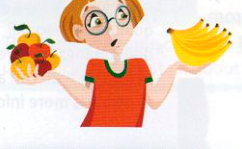
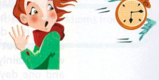

Exercises
12.1 Complete these dialogues with an idiom from A or B opposite.
-
A: My new neighbour was at school with you!B:
-
A: Is it OK if I bring Jeff to your party?B:
-
A: Do you think Anne or Brian is to blame for their break-up?B:
-
A: Goodness! It's nearly midnight!B:
-
A: Did you manage to get tickets for the concert in the end?B:
-
A: Do you like caviar?B:
-
A: He says he's going to be Prime Minister one day.B:
-
A: Would you agree to do overtime for no extra pay?B:
12.2 Complete these sentences with an idiom from C opposite.
-
A: I can't come out with you because I've got to wash my hair.B:
-
A: I've never swum in the Mediterranean.B: It really is wonderful!
-
A: Your new girlfriend has dropped you already!B:
-
A: As soon as I moved into my new flat, the roof started leaking.B:
-
A: It's wonderful being here on the river when everyone else is at work!B: You're right
12.3 Correct the mistakes in these idioms.
- It's a lovely present. Thanks a thousand.
- You won't find it difficult to learn to ski. There's really nothing to that.
- It's either here or there which hotel you decide to stay in – they're both excellent.
- Let's have a really big wedding. The more, the merry.
- You may say that again! I couldn't agree with you more!
- He's travelled a lot. You say it, he's been there.
12.4 Which idioms do these pictures make you think of?
1

2
3

Over to you
Think of some statements that might prompt the conversational responses in this unit, and use them to learn the responses. For example, Do you like heavy metal music? I can take it or leave it.